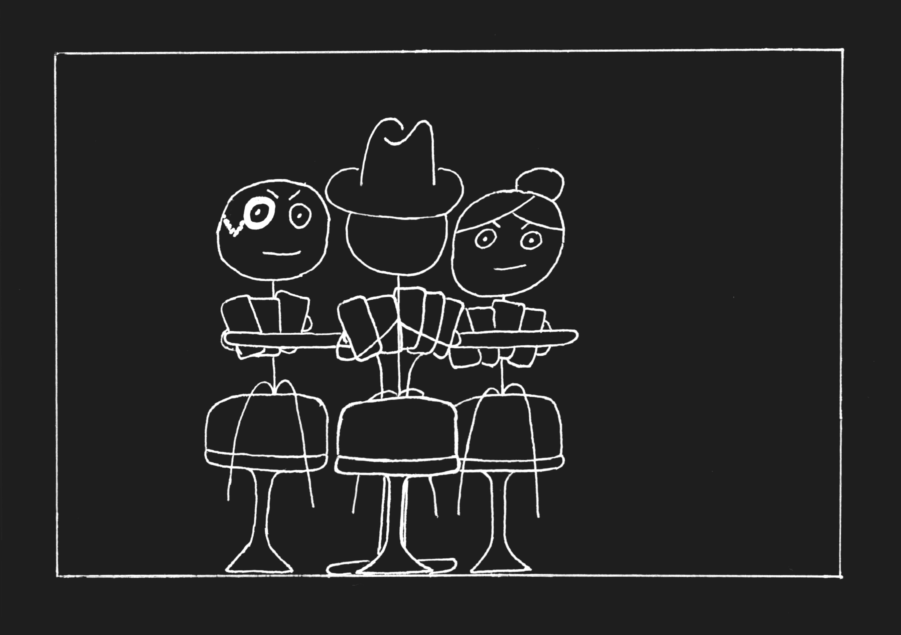
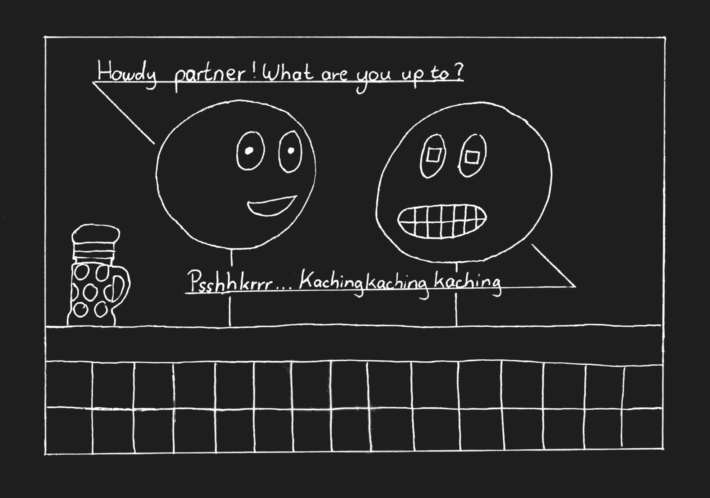
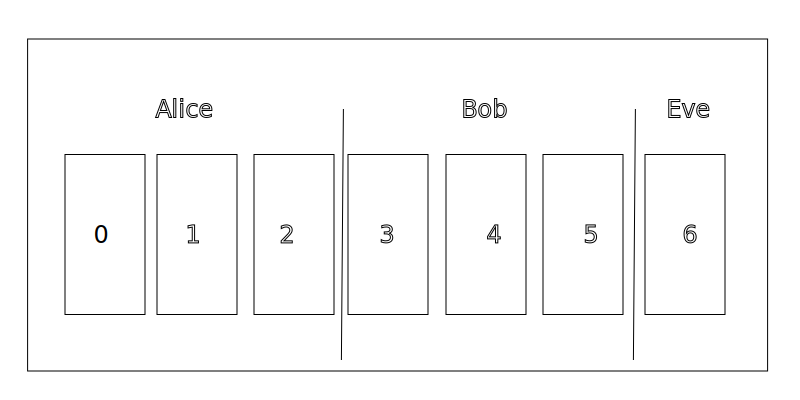
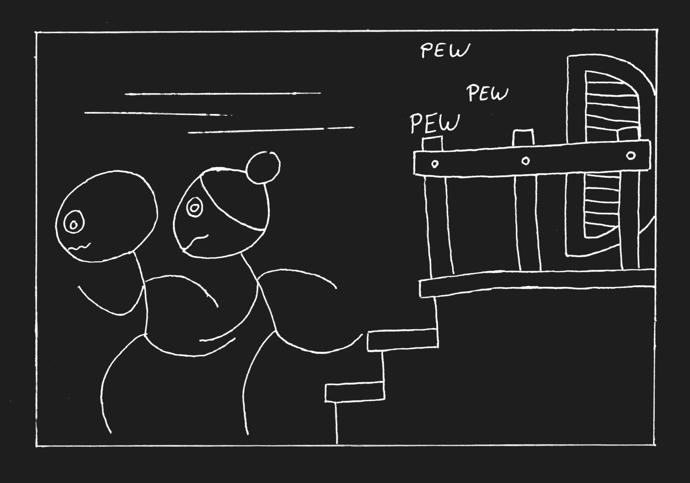
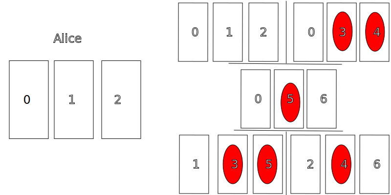

The Russian Cards Problem is a captivating puzzle that not only challenges our logical reasoning but also provides deep insights into the nature of knowledge and communication. It’s a problem that, at first glance, seems simple but quickly reveals layers of complexity as you attempt to solve it. In this article, we will explore the problem in detail, dissecting each potential solution, understanding why some fail, and finally arriving at the correct approach.
Welcome to the "Crazy Mule", the most popular saloon west of the Mississippi.
Everyday folks from all over the country come here to have fun and retreat from their laborious lifes. Today however there are two very special guests: Awful Alice and Bad Bob, two experienced tricksters. Currently they are playing against Evesdropper Eve who is known for his perceptiveness. Fortunately for the tricksters they don’t rely on any deceptions, in fact their trick is a set of public communications that allows them to secretly exchange information.
Now you might wonder how this is supposed to work. How can you cheat by publicly communicating without revealing the information you exchanged? The easy answer to that would be to use some form of encryption, but those are designed around written communication and become unintelligible gibberish if you tried to use them verbally.
The Russian Cards Problem is formally stated as follows:
From a deck of seven known cards numbered 0 to 6, Alice (A) and Bob (B) each draw three cards, leaving one card for Eve (C). The task is for Alice and Bob to communicate their respective hands to each other openly, in a way that does not allow Eve to deduce the identity of any card in their hands.
This puzzle introduces strict conditions that add layers of complexity:
The challenge here is significant: how can Alice and Bob successfully convey their hands without revealing any information to Eve? This problem forces us to think carefully about not just what is said, but how and when it is said.
Take a moment to consider how you might solve this puzzle. Remember, your solution must be generalizable—meaning it should work for any card distribution, not just a specific case!
Example card distribution used for the explanations below:
At first glance, the problem might seem straightforward, and you might come up with a seemingly clever solution right away. However, many initial solutions fall short when examined closely. Let’s explore a couple of these false solutions to understand the common pitfalls.
Imagine the following scenario:
Alice says: "I have 0, 1, 2, or Bob has 0, 1, 2," and Bob says: "I have 3, 4, 5, or Alice has 3, 4, 5."
This might seem like a valid approach at first. After all, both Alice and Bob are making statements that cover the possibilities of their own and each other’s hands. However, this solution is fatally flawed because it relies on the assumption that ambiguity alone can protect information.
The problem with this approach is that Eve, knowing that Alice and Bob cannot lie, can infer crucial information. Since Alice does not know Bob’s cards, Eve can deduce that Alice must be holding 0, 1, and 2. The initial ambiguity is resolved, and the strategy fails.
Let’s consider another approach:
Alice says: "I don’t have 6," and Bob says: "Neither have I."
On the surface, this seems like a logical step. By eliminating a card from their hands, Alice and Bob appear to be narrowing down the possibilities. However, this solution also has a critical flaw.
If Eve holds card 5, she can immediately deduce that Bob must have card 6. The seemingly innocent elimination of card 6 gives away too much information, allowing Eve to pinpoint Bob’s cards. Thus, this strategy also fails.
These false solutions illustrate the delicate balance required in the Russian Cards Problem. Any attempt to communicate information must be carefully crafted to avoid giving Eve the upper hand.
Now that we’ve explored some of the common pitfalls, let’s move on to a solution that actually works. This solution, proposed by Van Ditmarsch, cleverly uses the structure of possible hands to communicate information securely.
Consider the following scenario where the cards are dealt as follows: Alice holds 0, 1, 2; Bob holds 3, 4, 5; and Eve holds card 6.
Alice announces: "I have one of 012, 034, 056, 135, 246," and Bob follows with: "Eve has card 6."
Let’s break down why this solution works:
Alice’s announcement covers a range of possible hands she might hold, each containing one card from her actual hand (012) and two cards from other possible combinations. This creates a scenario where, no matter which card Eve holds, Alice can still have multiple possible hands in play.
Bob’s announcement then confirms the card that Eve holds. Since Alice’s hand is included in her set of possibilities, Bob can safely narrow down the options without revealing specific cards. This ensures that after both announcements, Alice and Bob have successfully communicated their hands to each other without Eve being able to deduce which cards they hold.
The above graphic shows how bob eliminates alice possible hands from her announcements.
This solution works because it leverages the concept of mutual knowledge—both Alice and Bob know something that Eve does not, and they use this to their advantage. By carefully crafting their statements, they can communicate without giving away too much.
The Russian Cards Problem is not just a puzzle about communication—it’s also a rich exploration of the mechanisms of knowledge. To fully appreciate the solution we’ve discussed, it’s important to understand the different types of knowledge at play: mutual, common, and distributed knowledge.
Mutual Knowledge: This is knowledge shared by all participants. For instance, both Alice and Bob know that Eve holds a card, but they don’t know which one. Mutual knowledge plays a critical role in their ability to communicate securely.
Common Knowledge: This is a step further—knowledge that everyone knows, and everyone knows that everyone knows, and so on. In the Russian Cards Problem, common knowledge is carefully managed to ensure that Eve does not gain the upper hand.
Distributed Knowledge: This refers to information that is spread out among the participants. Alice and Bob each have pieces of the puzzle, and only by combining their knowledge can they fully understand the situation.
Understanding these concepts helps explain why the correct solution works. Alice and Bob’s communication strategy hinges on creating mutual knowledge that excludes Eve, while avoiding creating common knowledge that would give away their hands. The Russian Cards Problem, therefore, is as much about strategic communication as it is about logical reasoning.
While the solution provided by Van Ditmarsch is elegant and effective, it’s not the only way to approach the Russian Cards Problem. Other methods, including number-theoretic and combinatorial approaches, offer alternative ways to solve the puzzle. These methods often involve more advanced mathematical concepts, which can be both powerful and challenging to understand.
For example, one alternative approach involves labeling the cards with integers and using mathematical operators to create a system of communication. These solutions tend to be less intuitive but can be effective in specific scenarios. However, they are often more complex and harder to generalize, making them less accessible to those unfamiliar with advanced mathematics.
Despite their complexity, these alternative solutions provide valuable insights into the flexibility of the Russian Cards Problem. They demonstrate that there are multiple ways to solve a problem, each with its own strengths and weaknesses. Exploring these alternatives can deepen your understanding of the problem and help you appreciate the richness of logical puzzles.
We hope you have learned something interesting and you could enjoy thinking about the Problem.
Sources: List of Papers